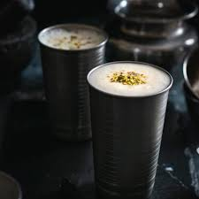
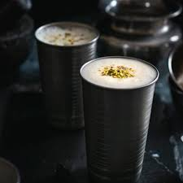

About Punjab
Punjab, a state in northern India, is known for its rich cultural heritage, vibrant traditions, and agricultural prowess. It is often referred to as the "Land of Five Rivers" due to the five major rivers—Sutlej, Beas, Ravi, Chenab, and Jhelum—that once flowed through the region. Punjab has a history steeped in ancient civilizations, most notably the Indus Valley Civilization, and has been a center for various empires, including the Mauryas, Guptas, and Mughals. The state is the birthplace of Sikhism, with the Golden Temple in Amritsar being its most revered site. Punjabi culture is characterized by its lively music, dance forms like Bhangra and Giddha, and a strong sense of community and hospitality. Agriculture is the backbone of Punjab’s economy, with the state being one of the leading producers of wheat, rice, and other crops in India. Punjab's history is also marked by the struggles for independence, particularly the movements led by figures like Bhagat Singh. Today, Punjab is known for its rapid development, educational institutions, and contributions to India's defense forces. The state's unique blend of tradition and modernity continues to shape its identity in contemporary India.
Punjab Culture
Punjab's culture is a vibrant blend of traditions, music, dance, and festivals. The state is renowned for its lively Bhangra and Giddha dances, often performed during festivals like Vaisakhi. Punjabi music, including folk and devotional songs, plays a central role in daily life. The cuisine is rich and diverse, with dishes like Makki di Roti and Sarson da Saag being iconic. Sikhism deeply influences Punjab's culture, with the Golden Temple in Amritsar being a spiritual center. The Punjabi spirit of hospitality, community, and celebration is evident in its colorful festivals, weddings, and cultural events.


Punjab Dhool & Dharees
In Punjab, dhool refers to the traditional drum, central to folk music, while dharees are handwoven cotton rugs, often adorned with vibrant patterns, reflecting the region's rich cultural heritage.

Rasm-e-Hina
Rasm-e-Hina, or the henna ceremony in Punjabi weddings, involves adorning the bride's hands and feet with intricate mehndi designs, symbolizing joy, beauty, and blessings for the marriage.

Harvesting Season
The harvesting season in Punjab, marked by the festival of Vaisakhi in April, celebrates the ripening of wheat crops. Farmers joyously harvest, performing Bhangra and Giddha to express gratitude and prosperity.
Dhool Mela
Dhool Mela in Punjab is a vibrant village fair centered around the dhool (drum), featuring traditional music, dance, and folk performances, celebrating community spirit and cultural heritage.

Naiza Bazi
Neza Baazi is a traditional Punjabi sport involving horseback spear-throwing, where skilled riders display agility and precision, showcasing their valor and martial heritage during festive events and fairs.
Bull Race
The bull race, or Kali Dal, is a traditional sport in Punjab where powerful bulls, guided by skilled farmers, race across fields, reflecting the region's agrarian culture and competitive spirit.

Bear The Dog Fight
Bear and dog fights, once part of rural Punjab's traditional entertainment, involved brutal contests between animals. These events, now illegal, reflect a controversial aspect of the region's past.

Horse Dance
Horse dance, or Ghoda Naach, in Punjab features trained horses performing rhythmic movements to traditional music. This lively display is often seen at cultural festivals, weddings, and celebrations, showcasing equestrian skills.
Punjabi Food
Punjabi cuisine is renowned for its rich, hearty flavors and diverse offerings. Staples include makki di roti (corn flatbread) and sarson da saag (mustard greens), often enjoyed with lassi, a traditional yogurt drink. Chole Bhature (spicy chickpeas with deep-fried bread) and Butter Chicken are popular dishes that exemplify the region's love for bold, flavorful food. Amritsari Kulcha, a stuffed bread, and Aloo Paratha, spiced potato-filled flatbread, are also favorites. Punjabi food often features generous use of ghee (clarified butter) and spices, reflecting the region's agricultural abundance and festive spirit.
 
